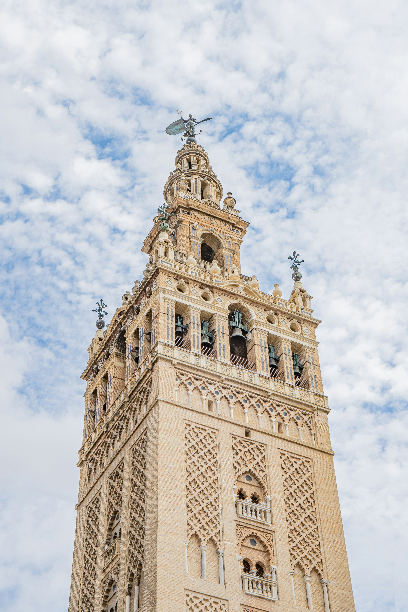
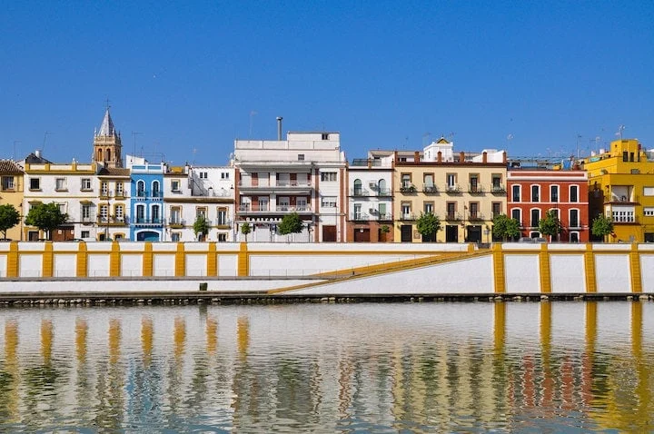

Jelajahi Sudut
Kota Klasik
Panduan rute perjalanan kurasi untuk menyusuri jejak peradaban, bangunan arsitektur megah, dan tempat lahirnya mahakarya seni asli Sevilla.
4 Destinasi Pusat Peradaban Budaya

Catedral de Sevilla & La Giralda
Katedral Gotik terbesar di dunia sekaligus tempat peristirahatan terakhir Christopher Columbus. Menara loncengnya, La Giralda, dulunya adalah menara masjid peradaban Islam Almohad yang mencerminkan asimilasi budaya megah Spanyol.
Buka Google Maps →
Real Alcázar de Sevilla
Kompleks istana kerajaan tertua di Eropa yang menggabungkan gaya arsitektur Mudéjar (perpaduan Islam dan Kristen). Taman-taman labirinnya yang indah menjadi saksi bisu perkembangan tata kota kuno wilayah Andalusia.
Buka Google Maps →
Plaza de España
Alun-alun raksasa berbentuk setengah lingkaran megah dengan kanal air di tengahnya. Dindingnya dihiasi oleh ubin keramik (Azulejos) yang menceritakan sejarah dari setiap provinsi yang ada di Spanyol.
Buka Google Maps →
Barrio Triana (Distrik Triana)
Terletak di seberang Sungai Guadalquivir, lingkungan legendaris ini adalah tempat lahirnya para maestro musik gitar, seni keramik, dan tarian rakyat Flamenco asli Sevilla. Pusat budaya otentik lokal berada di sini.
Buka Google Maps →Tips Eksplorasi Berdasarkan Musim
Musim Semi (Primavera)
Jalanan di sekitar Katedral akan ditutup total karena digunakan sebagai jalur utama parade Semana Santa. Disarankan menjelajah dengan berjalan kaki dan memesan tiket masuk istana 3 bulan sebelum kedatangan.
Musim Gugur (Otoño)
Waktu terbaik untuk mengunjungi Distrik Triana karena udara malam yang sangat sejuk. Banyak pementasan teater tari jalanan terbuka sebagai bagian dari perayaan festival Bienal de Flamenco.
Musim Dingin (Invierno)
Fokuskan eksplorasi malam hari menyusuri sepanjang jalur Avenida de la Constitución. Seluruh pusat kota lama akan bermandikan cahaya instalasi lampu raksasa menyambut perayaan festival Natal.